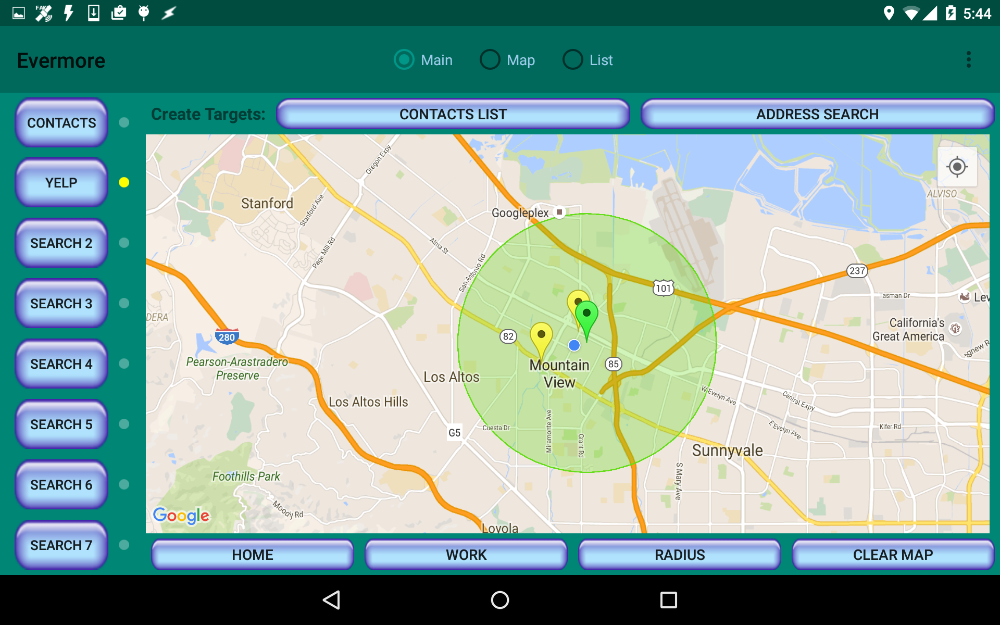

The color of the search result
Darts
match the color of the Search button you used.
You can click on the same button to refine the search, click on a different button to add another search, or clear the map using "CLEAR MAP".
You can click on the same button to refine the search, click on a different button to add another search, or clear the map using "CLEAR MAP".